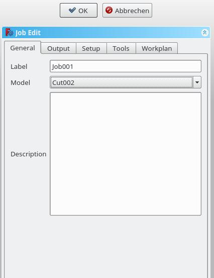
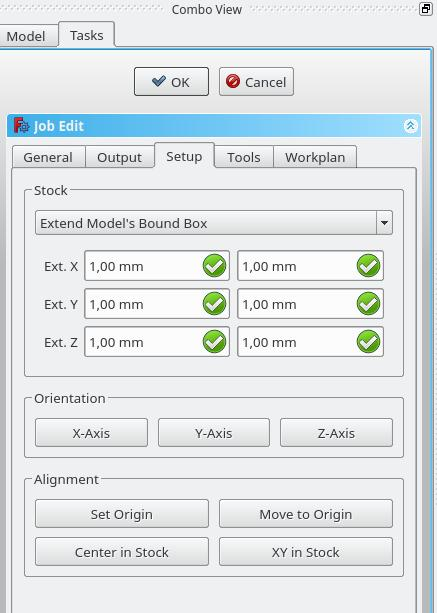

CAM Auftrag
 CAM Auftrag
CAM Auftrag
- Menu location
-
- Workbenches
- Default shortcut
-
kbd:[P J]
- Introduced in version
-
-
- See also
-
None
Beschreibung
Der Befehl  CAM Auftrag erstellt ein neuen Auftrag (Job-Objekt) im aktiven Dokument; er enthält die folgenden Informationen:
CAM Auftrag erstellt ein neuen Auftrag (Job-Objekt) im aktiven Dokument; er enthält die folgenden Informationen:
-
Eine Liste mit Definitionen zur Werkzeugsteuerung, in der die Geometrie, Vorschübe und Geschwindigkeiten für die Pfadbearbeitungswerkzeuge angegeben sind.
-
Eine schrittweise Arbeitsablaufliste von Pfadbearbeitungen.
-
Ein Basiskörper - ein Klon, der für den Versatz verwendet wird.
-
Ein Schaft, der das Rohmaterial darstellt, das im Arbeitsbereich CAM gefräst wird.
-
Ein Einrichtungsblatt, das die von den Pfadbearbeitungen verwendeten Eingaben, einschließlich statischer Werte und Formeln, enthält.
-
Konfigurationsparameter, die den Zielpfad des ausgegebenen G-Code Auftrags, den Dateinamen und die Dateierweiterung sowie den Postprozessor angeben (der zur Erzeugung des entsprechenden Dialekts für die Ziel-CNC-Steuerung und zur Anpassung von Einheiten, Werkzeugänderungen, Parken usw. verwendet wird).
Anwendung
-
Es gibt mehrere Möglichkeiten, den Befehl aufzurufen
-
Die Schaltfläche
 Auftrag drücken.
Auftrag drücken. -
Den Menüeintrag auswählen.
-
Das Tastaturkürzel P dann J.
-
Der GUI-Dialog Auftrag bearbeiten hat fünf horizontal ausgerichtete Reiter: Allgemein, Ausgabe, Einrichtung, Werkzeuge, und Arbeitsplan. Der Benutzer kann jederzeit die Optionen OK oder Abbrechen innerhalb des Dialogs verwenden.
Allgemein

-
Bezeichnung: Der Name des Auftragsobjekts wie er in der Baumansicht angezeigt wird.
-
Modell: Das Basisobjekt, das durch seine Form die Pfade des Jobs definiert. Wenn es sich um ein PartDesign-Objekt handelt, ist es normalerweise der Body, den Du hier auswählst. Wenn du ein Element in der Baumstruktur vorher ausgewählt hast, klicke auf das Symbol "Auftrag hinzufügen", das Element ist hier bereits eingetragen. Du kannst es ändern, indem du ein anderes Element aus dem Ausklappmenü auswählst.
-
Beschreibung: Du kannst hier einige Notizen zu dem Auftrag hinzufügen. Die Notizen dienen nur zu deiner Information und haben keine Auswirkung auf den Pfad.
Ausgabe

-
Ausgabedatei: Lege den Namen, die Erweiterung und den Dateipfad der G-Code-Ausgabe fest. Du kannst die folgenden Platzhalter verwenden:
-
%D Verzeichnis des aktiven Dokuments
-
%d Name des aktiven Dokuments (ohne Erweiterung)
-
%M Makro-Verzeichnis des Benutzers
-
%j Name des Auftrags
-
-
Prozessor: Den Postprozessor für die Maschine auswählen.
-
Argumente: Bei Bedarf Argumente für den Postprozessor hinzufügen.
-
Maschine: Optional eine Maschinenkonfiguration auswählen. Wenn eine Maschine ausgewählt wird, werden dadurch der Postprozessor und die zugehörigen Ausgabeeinstellungen für den Auftrag festgelegt.
Einrichtung

-
Bestand: Lege die Größe und Form des Rohmaterials fest.
-
Orientierung: Ausgewählte Kante oder Fläche wird verwendet, um die Basis oder den Schaft entsprechend zu orientieren.
-
Ausrichtung: Wähle einen Knotenpunkt aus, um den Ursprung festzulegen oder die Basis oder das Lager zu verschieben.
Werkzeuge

Füge das/die Werkzeug(e) aus deiner Werkzeugtabelle hinzu, welche du für die Arbeitsgänge bei diesem Auftrag benötigst.
Nachdem ein Werkzeug hinzugefügt wurde, kannst du den Vorschub und die Spindeldrehzahl einstellen/ändern, wenn du bei diesem Auftrag einen anderen Vorschub benötigst. Eine Änderung hier ändert nicht die in der Werkzeugtabelle gespeicherten Parameter.
Das Standardwerkzeug kannst du löschen, wenn du ein eigenes Werkzeug hinzugefügt hast.